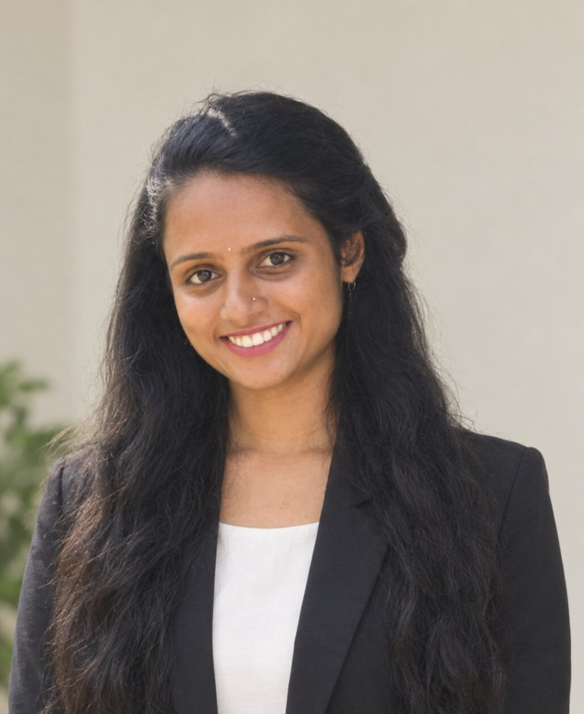

"From the ashes of failure,
the brightest success is forged"

Welcome to my professional portfolio. I am Harshitha, a skilled Data Analyst. Proficient in Excel and PowerBI, I specialize in the intricacies of data analysis and visualization, demonstrating adaptability and a collaborative approach in diverse team environments.I bring a wealth of experience in gathering and cleaning data, managing databases, and generating actionable insights.
Committed to continuous learning, I hold Certifications in Data Analysis, along with completing PowerBI and Data Analytics Essentials. I completed my Bachelor's in Computer Science And Engineering(Data Science) from Vivekananda College of Engineering And Technology, Puttur, with a commendable CGPA of 7.47. Explore my portfolio to gain insights
to my professional journey,skils,and the projects that reflect my dedication to excellence in the field.